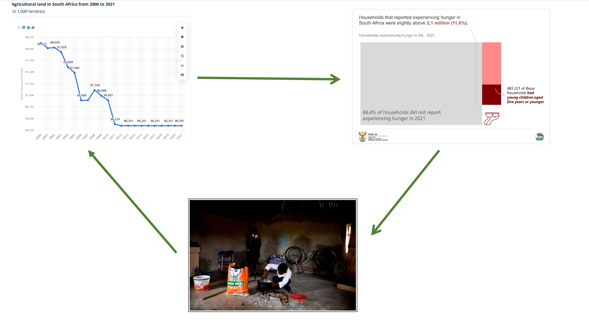
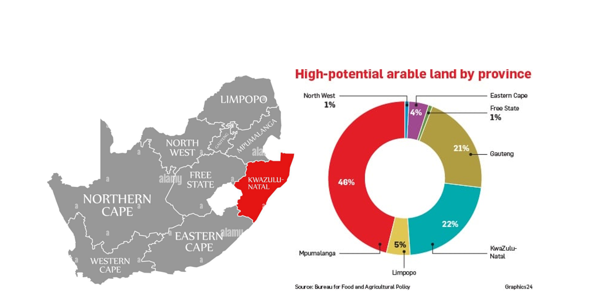
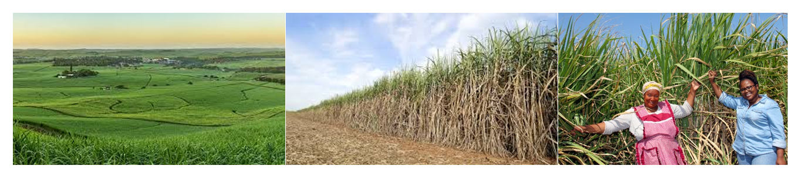

South Africa’s small-scale sugarcane farmers are facing a silent but growing challenge — declining soil health and reduced productivity. With arable land per person expected to decrease by 33% by 2050 compared to 1970, the pressure on our agricultural systems is rising.
For rural communities, where farming equals survival, this is more than just an environmental issue — it’s a food security crisis. Out of 18.9 million households in South Africa, over 3.7 million are food insecure, and small-scale farmers are most affected.
Roughly 22% of KwaZulu-Natal is classified as arable land. In this region, sugarcane farming has become a lifeline for many smallholders. But to keep up with market demand, farmers have had to intensify land use, leading to soil degradation and nutrient depletion.
While chemical fertilizers offer a short-term fix, they’re expensive and not always effective. Plus, they often leach into water systems, causing environmental damage.
When used as green manure or cover crops between sugarcane cycles, these legumes offer multiple benefits — without needing to reduce the land used for sugarcane.
Yes! These legumes significantly reduce the need for synthetic nitrogen fertilizers by absorbing and fixing nitrogen from the air, making them a budget-friendly option for small-scale farmers.
Despite their potential, Vicia sativa and Vicia villosa remain largely unused in South African sugarcane farming. Yet, these species could play a major role in solving food security challenges and restoring degraded lands.
Incorporating legumes into farming systems isn't just a soil solution — it’s a sustainable pathway toward better yields, lower costs, and healthier ecosystems. It’s time South African agriculture gave Vicia species the attention they deserve.
📸 Stay tuned for more on the role of native plants and legumes in sustainable farming. Got a question or experience with cover crops? Drop a comment or share your story!